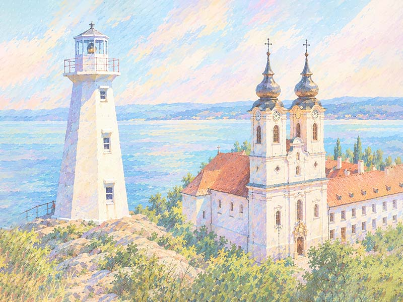

A Trans Europe Ultra az európai kontinens legkeményebb, határokon átívelő, önellátó kerékpáros ultraversenye, amely az Atlanti-óceán partján fekvő Portótól (PRT) köti össze a mezőnyt a festői magyarországi Tihannyal (HUN). A résztvevők 12 országon keresztül, embert próbáló hegyvidékeken és történelmi régiókon át küzdenek meg az elemekkel és önmaguk határaival egy egyedülálló nemzetközi mezőnyben.

A Trans-Canada Ultra a világ legnehezebb és leghosszabb önellátó kerékpáros ultraversenye. A mezőny a kanadai Yukon tartománybeli Whitehorse-ból indul, és egy emberpróbáló, 12.790 kilométeres útvonalat teljesítve éri el a célt: Újfundlandon, St. John’s közelében a Cape Spear világítótornyot.
Ezt a kihívást folytatja a TRANS EUROPE ULTRA a portugál felfedezők nyomdokain: a portói világítótoronytól indulva, 12 ország legmagasabb szakaszain át vezet az út a magyarországi Tihanyi Bencés Apátságig.
Amikor 1504-ben a portugál tengerészek feltérképezték Újfundland partjait, a mai St. John’s vidékét Terra de Bacalhaos néven jegyezték fel. Az utazás szellemi ívét a bencés örökség keretezi: Portóban a történelmi São Bento kolostorok őrzik a rend atlanti-óceáni jelenlétét, míg a célvonal a Tihanyi Bencés Apátságnál várja a célba érkezőket („Ora et labora”).
Rajt:
Porto (PRT), Mosteiro de São Bento da Vitória & Farol de Felgueiras
Cél:
Tihany (HUN), Bencés Apátság
Főbb adatok:
Időpontok:
A rajt a nyári napforduló és Szent János napja köré fonódik, amikor Porto lakói a Douro folyón ünneplnek.